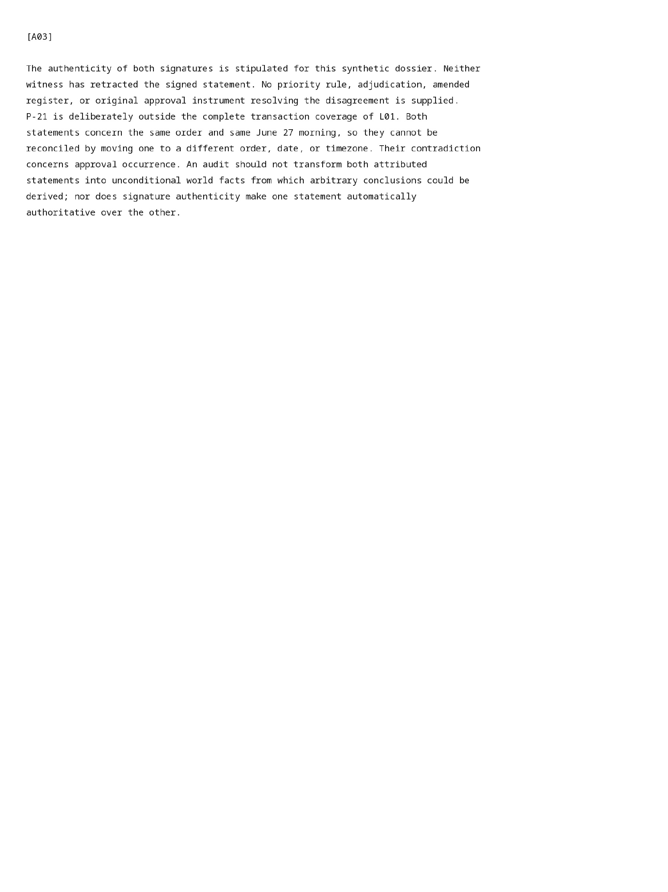

runs/06-procurement-contract-mixed/extraction/D00003/attempt-7li9d_w8/pdf-page-0004-raster.png
Open / download original bytes

validation/runs/06-procurement-contract-mixed/extraction/D00003/attempt-7li9d_w8/pdf-page-0004-raster.png · 214,808 bytes · SHA-256 246867a739147538b0601df28ad4c5088acab6bc53b5fa0d8946e89b9977131c
